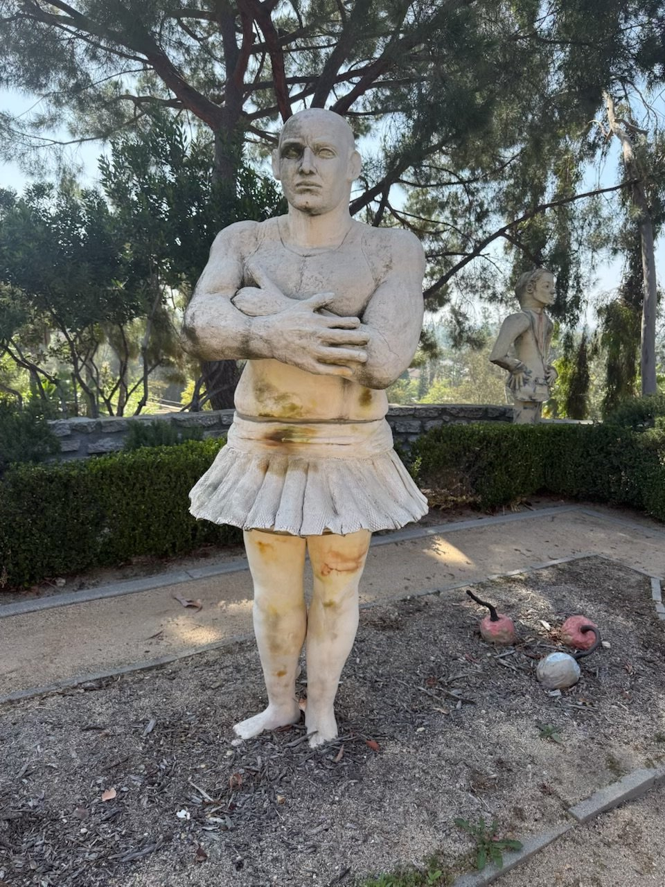
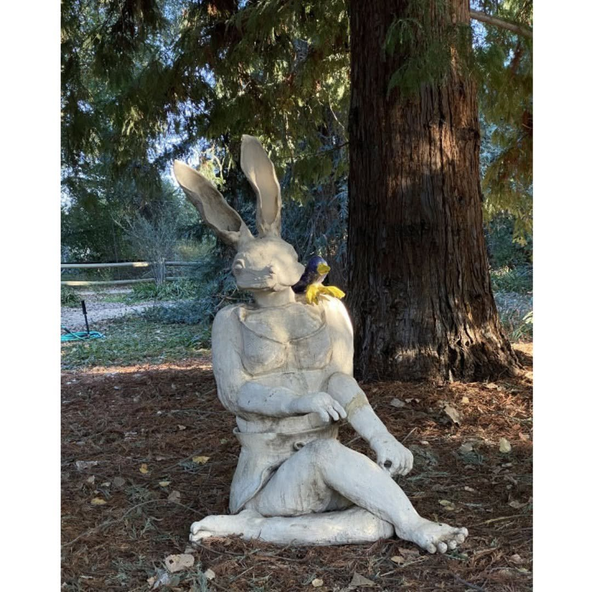
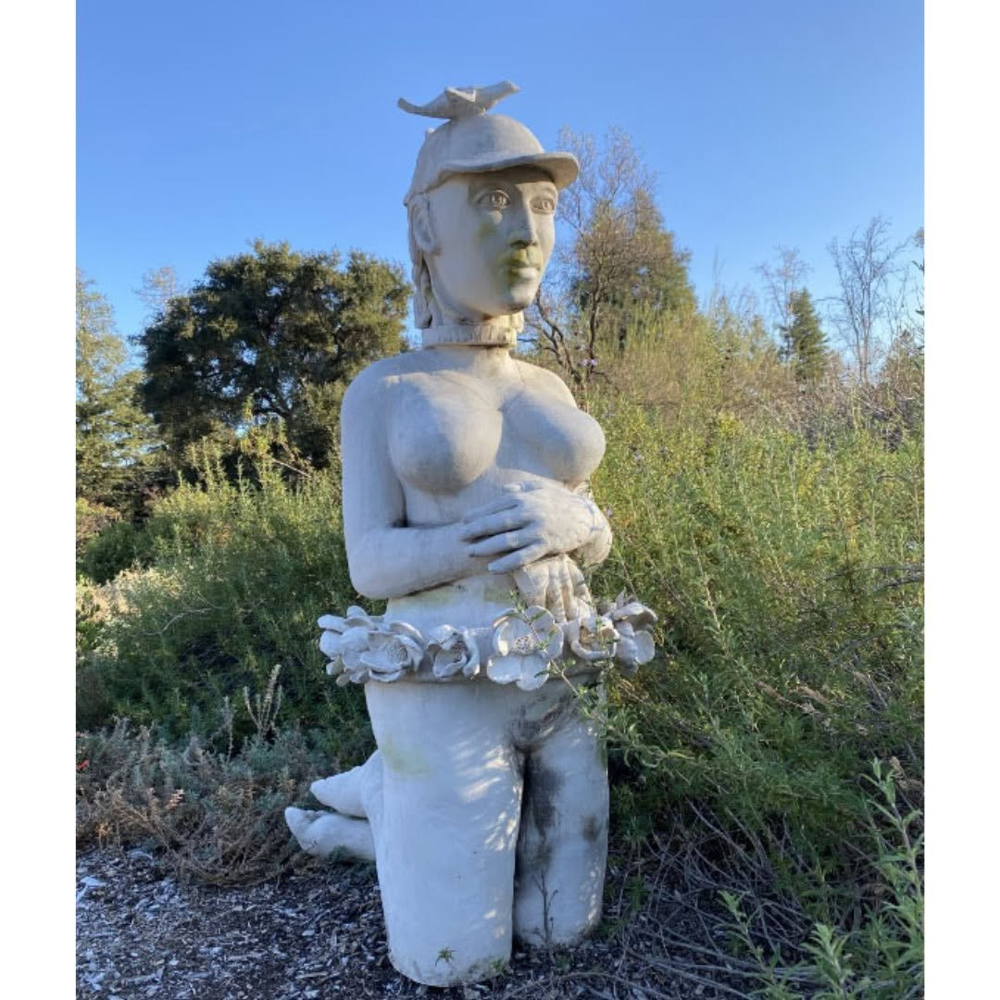
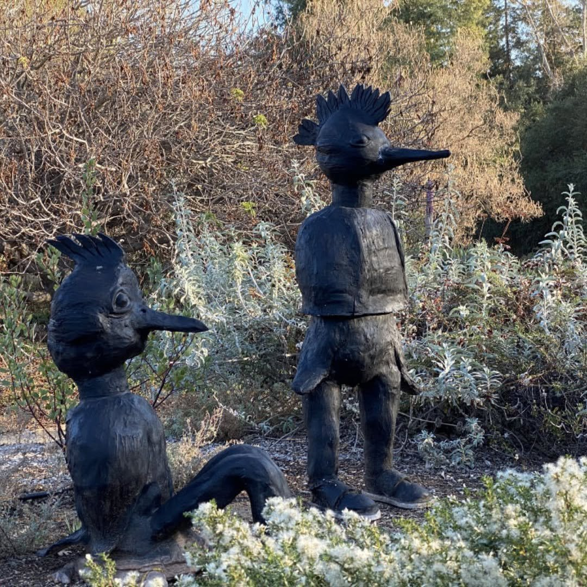
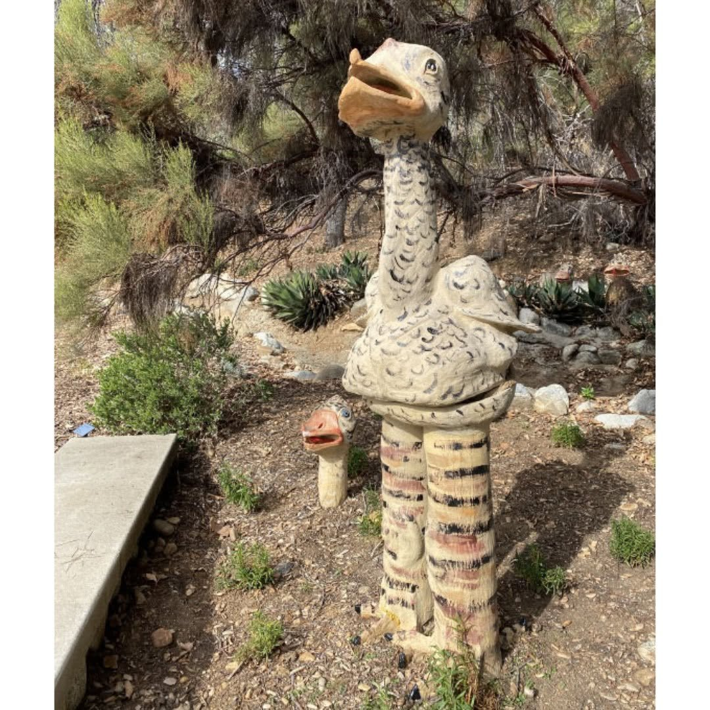
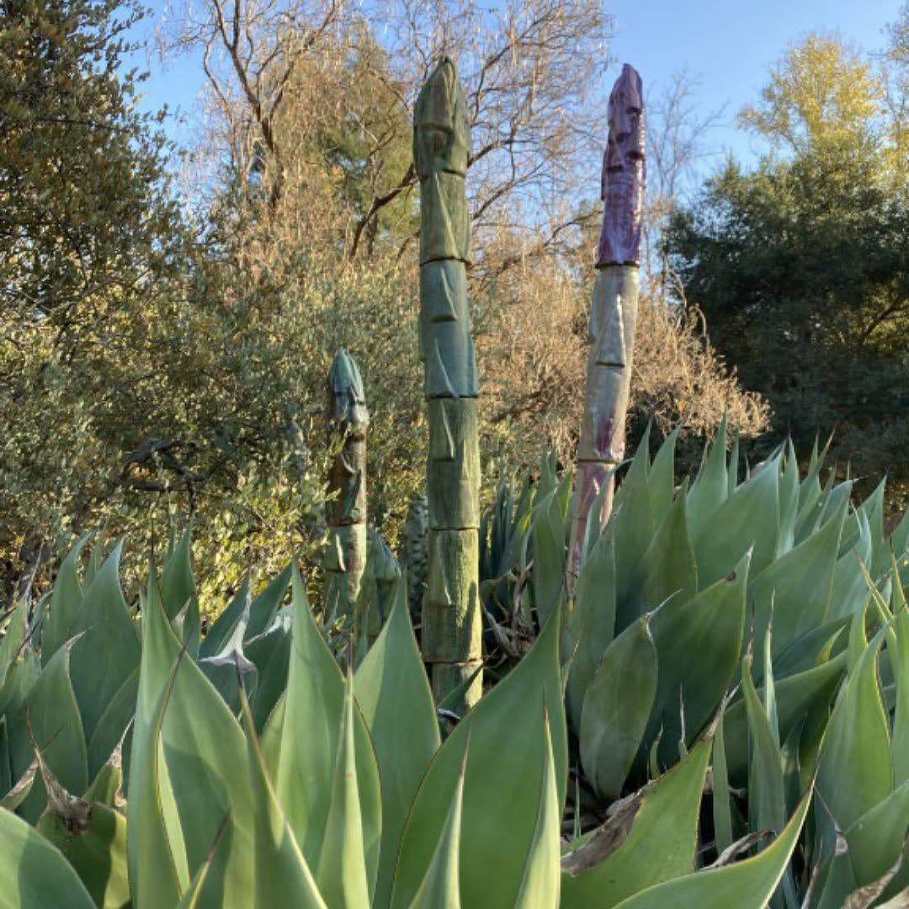
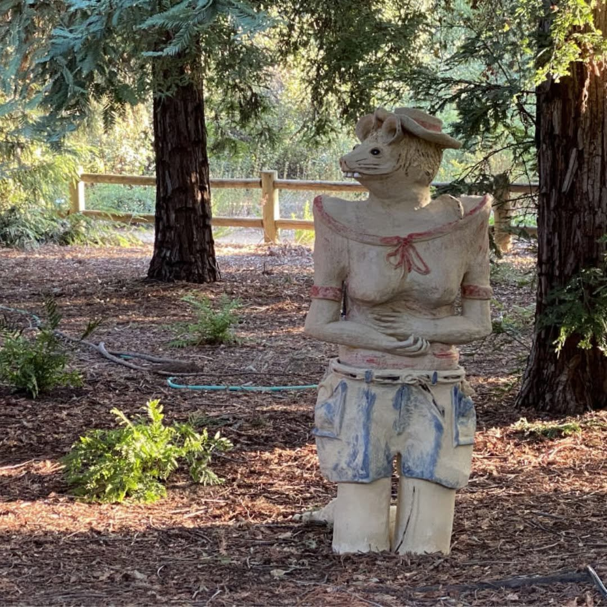

Selected Work
Hand-built clay · 2016 to today
A powerfully built figure in a tutu, arms folded. Strength and softness held in the same body. Garden installation.

A wolf at rest in a tank top and sneakers, rose in hand, lizard on knee. Folklore recast in the everyday.

A towering figure resolving into a single monumental bare foot. Her largest scale work to date.

Shown in Clayfornia at California Botanic Garden, where wild flycatchers famously nested in its ears.

Figure in a cap, bird overhead, garlanded in ceramic blossoms. Shown in Clayfornia, California Botanic Garden.

Crested bird figures standing sentinel among the sage. Shown in Clayfornia at California Botanic Garden.

The striped-legged bird from the studio, finished and standing tall among the agaves.

Totemic forms rising from the agave bed like bloom stalks. Title to be confirmed.

A dapper rodent in hat and shorts among the redwoods. Title to be confirmed.
- Based in
- Claremont, California
- Studio
- Studio 15, AMOCA Ceramics Studio, Pomona. Resident artist since 2016.
- Medium
- Hand-built clay. Figurative and animal forms at large scale.
- Community
- Longtime supporter of the arts across the Pomona Valley and Inland Empire
- Education
- [ To be supplied ]
- Collections
- [ Private collections, to be confirmed ]
Janell Lewis builds in clay at the scale of life. A longtime resident artist at the AMOCA Ceramics Studio, Pomona’s only clay center, housed in a former bank building, she is known for continually challenging herself toward larger and more ambitious sculpture: standing human figures, oversized animals, forms that meet the viewer eye to eye.
Her work carries a close attention to the ordinary detail. The fold of a jacket pocket, the lacing of a shoe, the curve of a rabbit’s ear, rendered with warmth and a quiet sense of humor. In Clayfornia: Ceramic Sculpture in the California Sunshine, fourteen AMOCA studio artists were invited to express California’s identity in the state’s quintessential medium. Her sculptures stood among native plants at California Botanic Garden and became part of the landscape itself; one was even adopted by nesting birds. The run proved popular enough to be extended through Memorial Day weekend.
[ Artist statement to be supplied. Placeholder copy. ]
Exhibitions
Selected- 2020–21 Clayfornia: Ceramic Sculpture in the California Sunshine California Botanic Garden, Claremont, CA. Rosie, Rabbit, Stonehenge Birds.
- 2018 Studio Exhibition, Janell Lewis & Gary Lett AMOCA Ceramics Studio, Pomona, CA
- · Additional exhibitions to be supplied
Press
Selected mentions- 2020 Clayfornia coming to botanic garden Claremont Courier, October 2020
- 2020 Resident artist feature AMOCA / @amocamuseum, August 2020
- · [ Additional press and interviews to be supplied ]
Inquiries